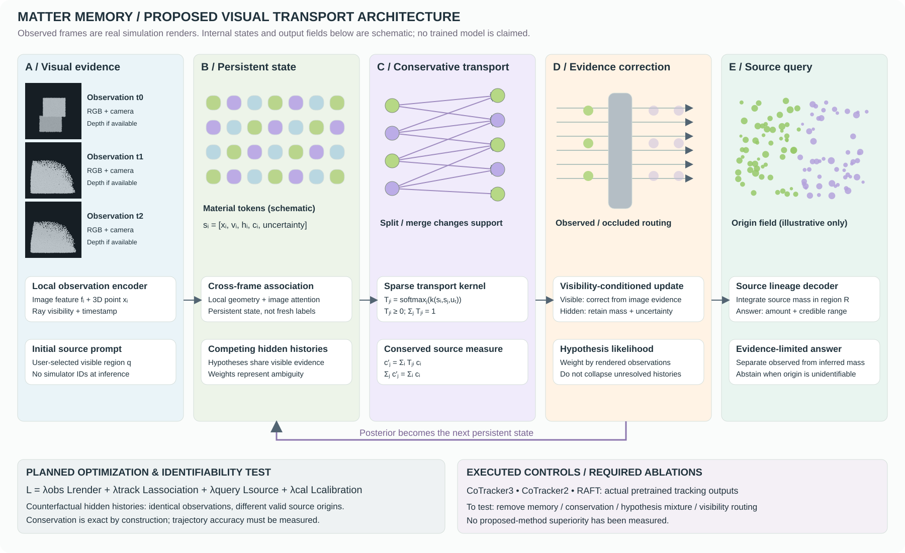

Reference identity
Oracle / evaluation onlyLoading predictions…
Explore an original Ameca-inspired humanoid in a furnished workspace. Three scripted sequences, orbit controls, and robot-eye views. This is a visualization prototype, not a learned policy or benchmark result.
Follow a region of material as it moves, deforms, and disappears from view. A research direction toward visual systems that remember what things are made of—and where it goes.
Explore material motion ↗Interactive rendering of the first training trajectory from each Learning to Simulate / GNS dataset. Each view displays a fixed sample of 1,200 particles across 96 recorded frames. Color follows initial particle identity. Changing the region changes the query, not the simulation.
Three material clips. Three published neural baselines. Select a scene, scrub the shared timeline, and inspect individual trajectories against known simulator identity. No proposed-model prediction is shown.
Choose a point above to compare the same image crop across all four panels. Dashed paths indicate queries hidden by the renderer. Error vectors are shown only when the reference point is visible.
Inputs are 256 × 256 opaque particle renders, 32 evenly sampled frames from one training trajectory per material. Models receive identical grayscale RGB frames and 16 initially visible query coordinates. Colored tracks are added after inference. This deliberately difficult synthetic screen is not a standard tracking benchmark or evidence of real-world performance.
Reference, CoTracker3, CoTracker2 and RAFT.
Comparison MP4 ↓ · Unannotated input ↓Reference, CoTracker3, CoTracker2 and RAFT.
Comparison MP4 ↓ · Unannotated input ↓Reference, CoTracker3, CoTracker2 and RAFT.
Comparison MP4 ↓ · Unannotated input ↓Baseline provenance. CoTracker3 and CoTracker2 use the authors’ released weights. RAFT-large uses C_T_SKHT_V2 weights and bilinear integration. These are established published methods; the page does not claim they are all current SOTA. CoTracker3 and CoTracker2 are related model generations, not independent algorithm families.
Object labels are convenient until material is divided, combined, or hidden. The proposed problem follows an initial material region through a sequence of changes and asks where its descendants end up.
The central challenge is inferring transport from incomplete observations. Following known simulator particles is straightforward. Recovering their movement from images, with honest uncertainty, is the research problem.
A persistent state that carries source mass and visibility uncertainty may preserve material identity better than repeatedly matching visible shapes.
A candidate architecture organized around material transport. This is a design hypothesis; the learned components below have not been implemented or evaluated.

The proposed latent state carries location, motion, source mass, and uncertainty. A split changes where material is assigned; it does not create a new origin label.
Required test: compare against the same predictor without persistent state.Four classical controls, three query axes, three temporal strides, and one training trajectory per material. These measurements test feasibility; they do not demonstrate a new model or generalization.
| Simulation | Initial majority | Static correspondence | Temporal correspondence | Estimated velocity |
|---|
The water depth-axis query starts with 384 visible particles from one source and zero from the other. That mixes tracking with hidden-source inference. The next protocol must expose the initial source or explicitly model this ambiguity.
Show what is new beyond particle advection, visual dynamics, and existing split/merge models.
Separate visible-source tracking from genuinely ambiguous hidden transport.
Evaluate held-out trajectories, material families, and real observations with matched inputs.